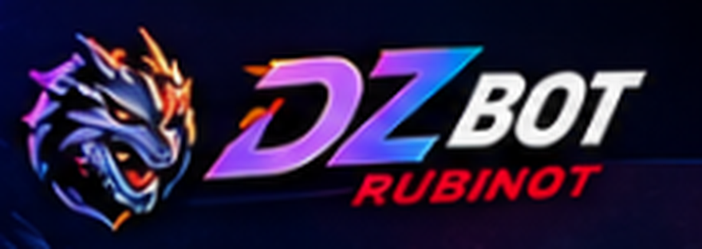
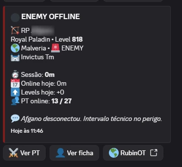
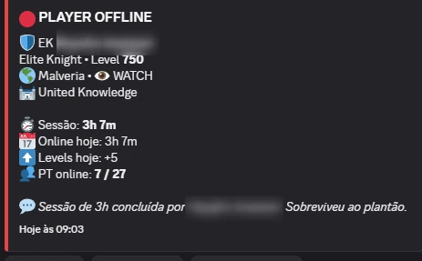
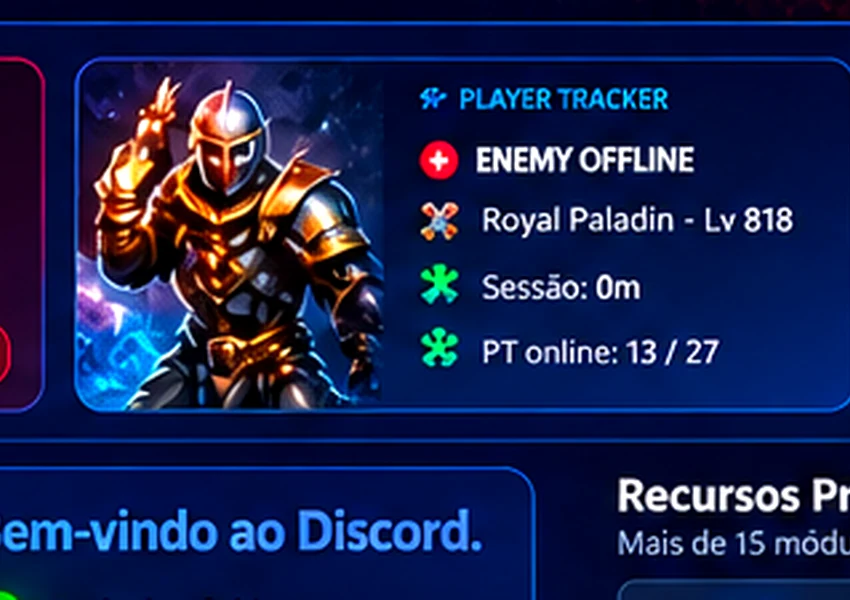
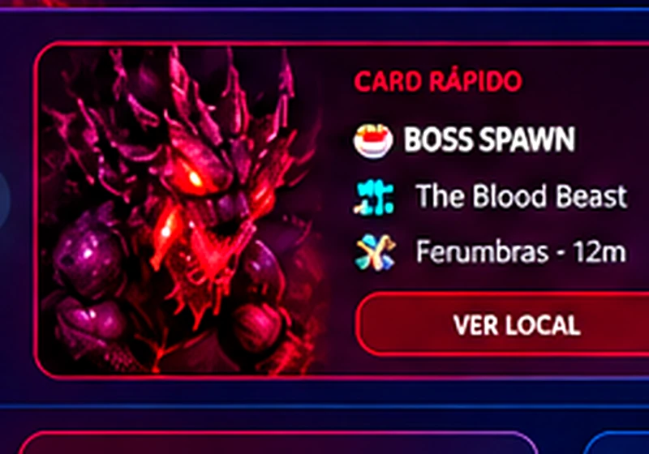
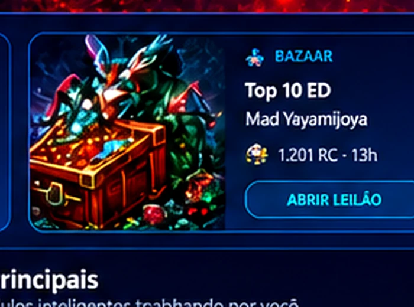

Antes: você caça a informação
- TeamSpeak, Discord, sites e planilhas separados
- Alguém precisa lembrar de conferir
- Dados chegam sem contexto
- Boss, player e Bazaar em telas diferentes

O DZbot acompanha players, bosses, Bazaar, skills, mortes, rankings e sinais importantes do RubinOT — e entrega tudo no ambiente onde sua guild ou PT já se comunica.

Uma página premium precisa deixar claro o valor antes de listar dezenas de funções. Aqui a jornada começa pelo problema real: informação fragmentada, consulta manual e reação atrasada.
centraliza
Passe o mouse, clique ou toque nos módulos. Cada card reage, ilumina e atualiza a demonstração ao lado com contexto real do DZbot.
Veja atividade, sessão, level e contexto de PT sem precisar ficar atualizando páginas.

Cards rotativos automáticos destacam os principais diferenciais do DZbot. Passe o mouse para pausar; no celular, deslize.

Online/offline, sessão, level, vocação e contexto de PT direto no Discord.
Explorar módulo →
Radar, histórico e níveis de atenção para bosses relevantes do RubinOT.
Explorar módulo →
Top, filtros, watch e acesso rápido ao leilão quando um char merece atenção.
Explorar módulo →Online, evolução, mortes e eventos observados condensados em um resumo útil.
Explorar módulo →Use as setas, arraste no desktop ou faça swipe no celular. Clique numa mensagem para ampliar.
A apresentação foi reorganizada por benefício: saber o que mudou, entender por que importa e decidir o que fazer.
Tracking, sessão, PT online e sinalização de friend/enemy/watch.
Explorar Player Tracker →Radar com nível de atenção e contexto histórico sem prometer certeza falsa.
Explorar Boss Intelligence →Top, filtros e watch para reduzir ruído e destacar oportunidade.
Explorar Bazaar →Guild, PT, objetivos, módulos e canais importantes.
Selecionamos os módulos que realmente fazem sentido para seu servidor.
Canais e configurações ficam organizados e isolados por servidor.
O DZbot passa a acompanhar e entregar os sinais no Discord.
Não. Esta experiência foi desenhada para RubinOT e para o fluxo de informação da sua guild ou PT dentro do Discord.
O objetivo é justamente reduzir troca de tela. Alertas, resumos e comandos ficam no Discord; links externos aparecem quando realmente agregam valor, como abrir um leilão.
Sim. A implantação é composta de acordo com o uso da guild ou PT, sem uma tabela pública fixa.
Sim. A seção de prova usa screenshots reais fornecidos pelo proprietário do DZbot, com nomes sensíveis ocultados.
Sim. A V7 foi reconstruída com navegação mobile, cards por toque, galerias responsivas e CTAs próprios para telas menores.
Conte como você joga. A implantação e a composição são personalizadas; não há tabela pública fixa.
RubinOT · Discord-first · implantação assistida